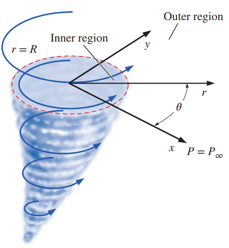

(1) Under what conditions is Bernoulli's equation valid?
(2) A horizontal slice through a tornado is modeled by two distinct regions.
The inner or core region \((0 < r < R)\) is modeled by solid body rotation—a rotational
but inviscid region of flow as discussed earlier. The outer region \((r > R)\) is modeled as an irrotational region of flow. The flow is two-dimensional in the \(r\theta\)-plane, and the components of the velocity field
\(
\vec{V} = (u_r, u_\theta)
\)
are given by velocity components:
\[
u_r = 0, \quad
u_\theta =
\begin{cases}
\omega r & 0 < r < R \\
\frac{\omega R^2}{r} & r > R
\end{cases}
\]
where \(\omega\) is the magnitude of the angular velocity in the inner region.

The ambient pressure (far away from the tornado) is equal to \(P_\infty\).
Calculate the pressure field in a horizontal slice of the tornado for \(0 < r < \infty\). What is the pressure at \(r = 0\)? Plot the pressure and velocity fields using appropriate software.
(3) Consider a thin-cored vortex ring in a fixed coordinate frame in which velocity \(\mathbf{u}(\mathbf{x}, t)\) vanishes at infinity. Suppose that the fluid density is constant and the vortex is in steady motion with a constant velocity \(\mathbf{U}\). Show the following relation between the kinetic energy \(K\), impulse \(\mathbf{P}\), and velocity \(\mathbf{U}\):
\[
K = 2\, \mathbf{U} \cdot \mathbf{P} + \int \mathbf{u}_* \cdot (\mathbf{x} \times \boldsymbol{\omega}) \, \mathrm{d}^3 \mathbf{x}
\]
where \(\mathbf{u}_* = \mathbf{u} - \mathbf{U}\) is the steady velocity field in the frame where the vortex ring is observed at rest.